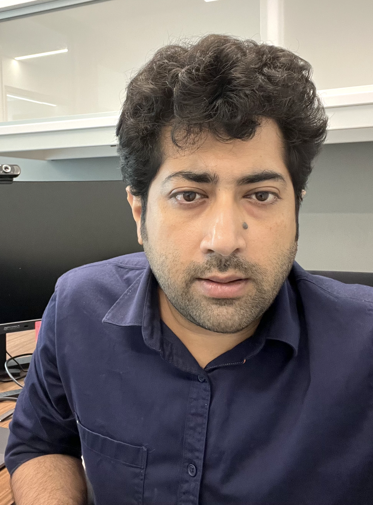
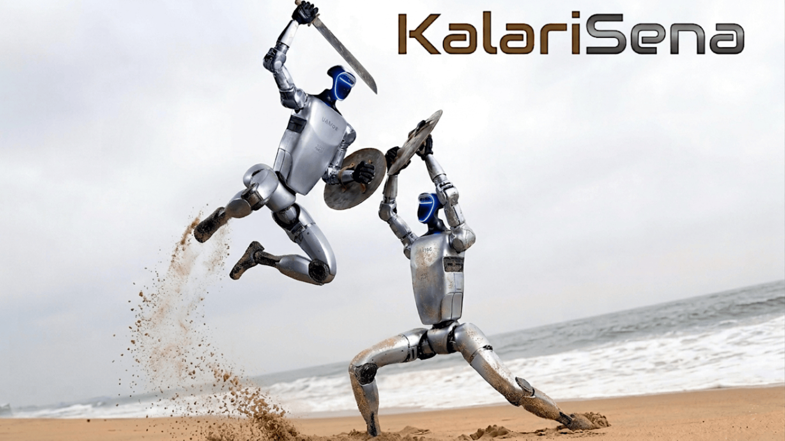
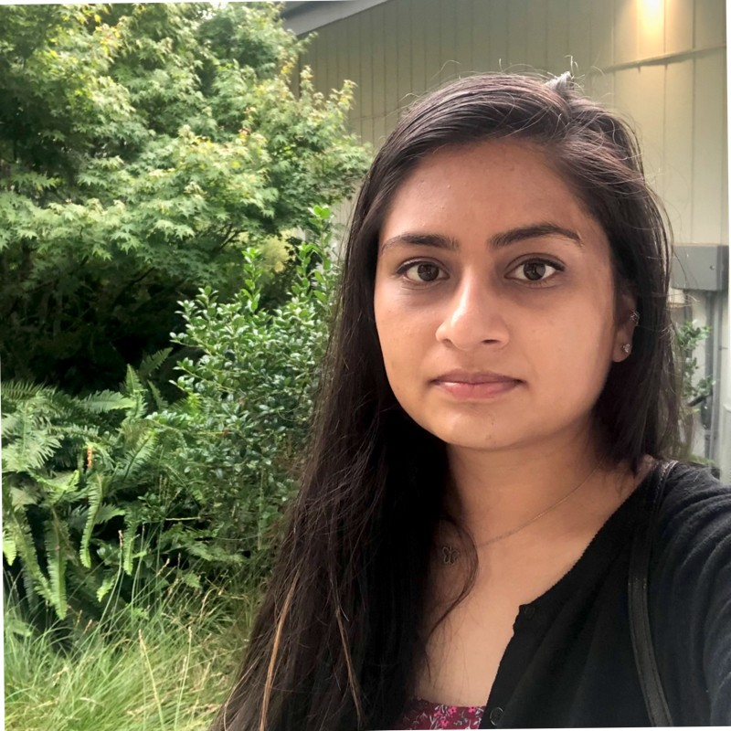

Amitava Das
Professor, BITS Goa | Former Research Associate Professor, AIISC, USA

Success Rate in High-G Rotations
Annotated Martial Motion Paths
MSE Post-Collision Restoration
Raw 4K Sync-Multi-View Stream

Scenario: Dynamic Kick Recovery

Scenario: Low-Posture Balance

Scenario: Weapon Form Dynamics
Multi-view motion capture is fused into stable skeletal tracks for fast retargeting.
The pipeline projects martial trajectories onto humanoid rigs with resilient postural correction.
Dynamics-aware force modeling helps agents recover from abrupt perturbations without collapse.
Training converges to low error under aggressive motion transitions, enabling stable real-time recovery.
KalariSena achieves stronger balance retention compared to previous baselines across perturbation benchmarks.

Professor, BITS Goa | Former Research Associate Professor, AIISC, USA
GenAI Leadership @ AWS | Stanford AI | Ex-Amazon Alexa, Nvidia, Qualcomm | EB-1 "Einstein Visa" Recipient | EMNLP 2023 Outstanding Paper Award

Applied Research Scientist Lead at Facebook AI Research | 6k+ citations | Ex-Citadel | CMU | IIT Kanpur | Startup Advisor & Mentor | Angel Investor | EB1A green card recipient

AI @ Meta | Ex-Amazon, Oracle, PANW | Stanford AI | EMNLP Outstanding Paper Award Recipient